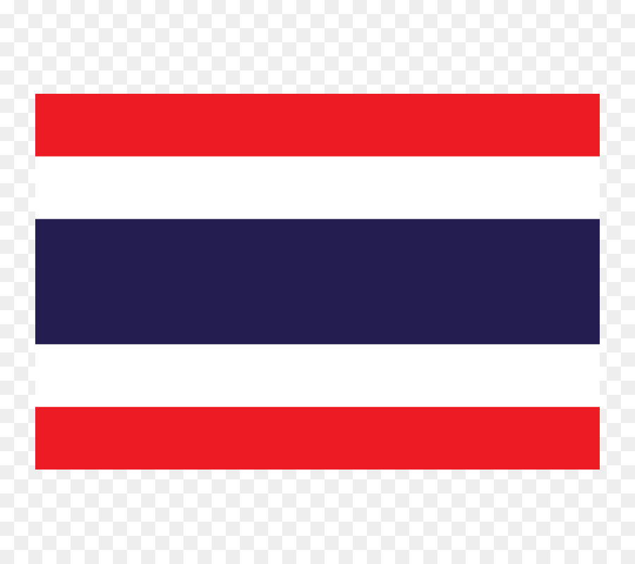
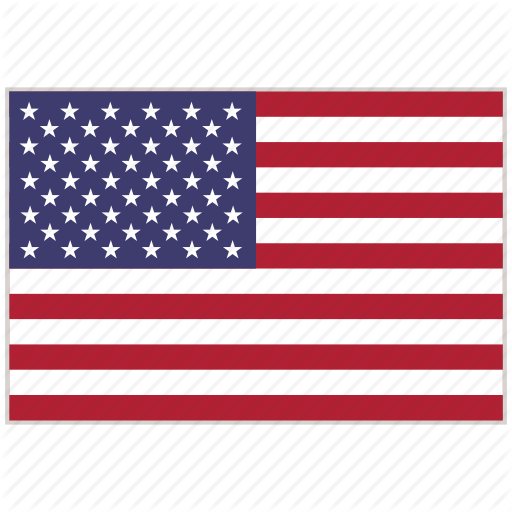

Our Bios
Name: Kaito

Hobby: Tennis
interest: music
occupation: Student
major: Computer Science
goals: To get work at Toyota
about Seattle: I like Seattle’s atmosphere, because people are living freewheelingly.
.
.
Nick: Jim
Hobby: Tennis
interest: dog, video games, movie
occupation: Student
major: Computer Science
goals: To work in Microsoft
your views about Seattle: I love Seattle because it's a lovely city that has so many places to travel.
.
.
Nickname: Rica Rickypop
Hobbies: painting, dancing, graphic
Interest: Cyber security, ethical hacking
Occupation: Line cook
Major: Web development
My views and ambition: I want be a Cyber-security black hat hacker, my views I like Seattle and the weather
makes me realize why I like computers. Plus, Seattle is a melting pot for cultures and tech.
Knowledge: Maya 3d, PowerPoint, typography